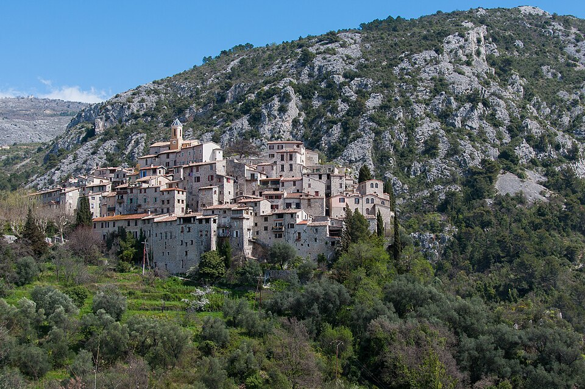
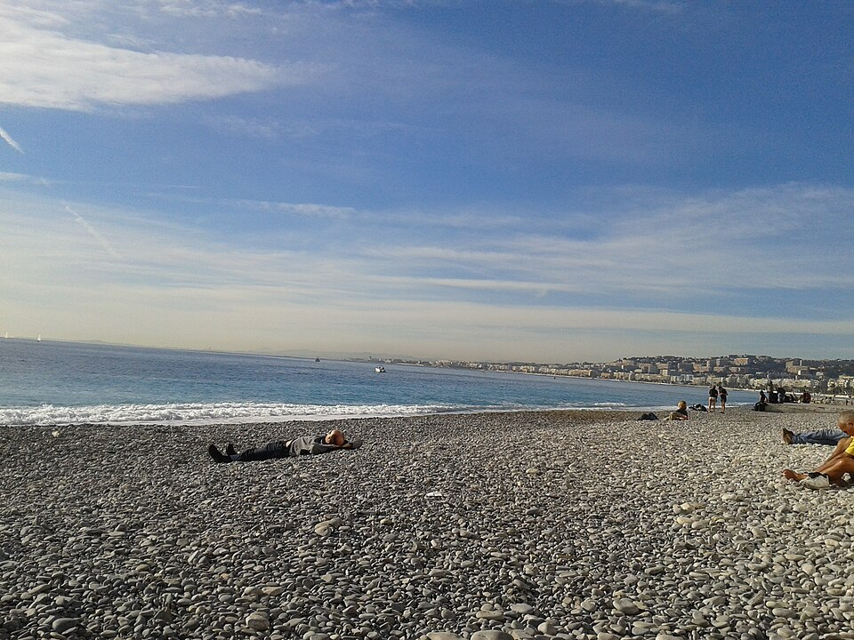
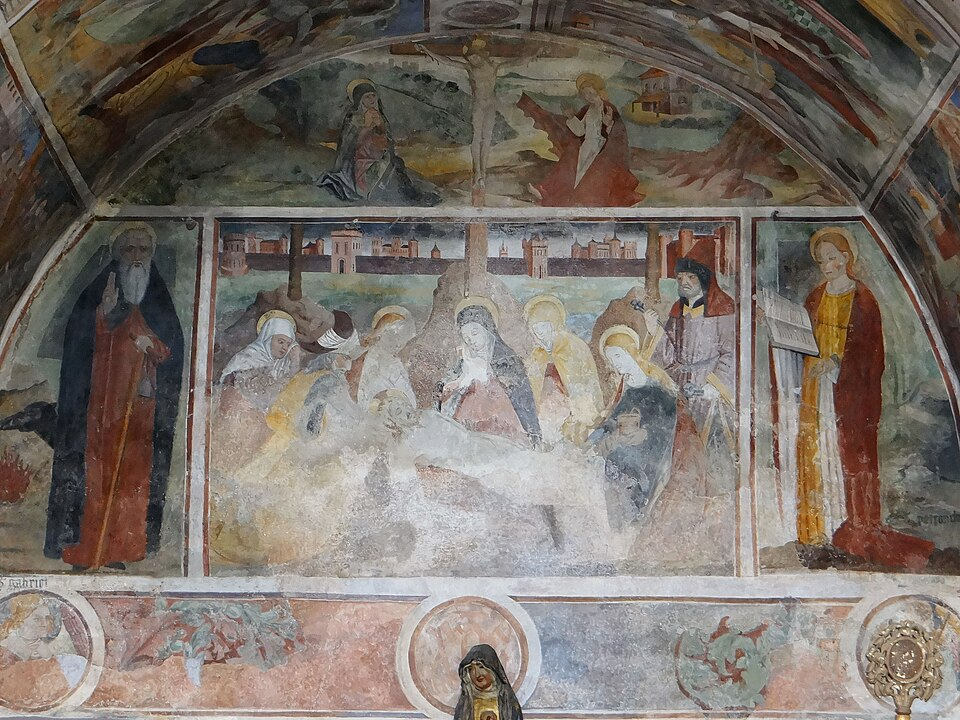
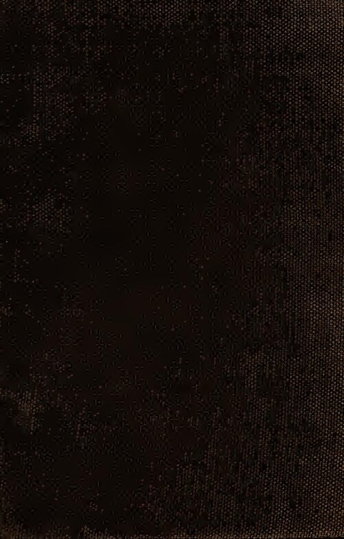

Un village suspendu sur un piton rocheux isolé, si photogénique qu'il apparaît dans des campagnes pub sans que personne ne le reconnaisse.
À découvrir à Peillon


Explorer le vieux village
Gratuit

Déjeuner sur la plage Arnulf
Payant

Église & chapelle des Pénitents Blancs
Gratuit

Balades & randonnées
Gratuit